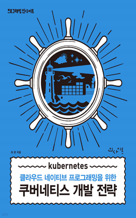

학습 목표
- 1. 쿠버네티스를 활용하여 애플리케이션을 개발할 수 있다.
- 2. 쿠버네티스를 효과적으로 활용할 수 있는 다양한 배경지식을 학습할 수 있다.
교육 특징
-
1. 초보 개발자도 이해하고 따라할 수 있는 친절한 강의 난이도
어려운 개념을 쉬운 설명과 용어로 풀어서 강의하여 초보 개발자도 학습이 가능한 친절한 강의
-
2. 현장 경험이 풍부한 강사의 실무중심형 강의 제공
현장에서도 왕성하게 활동하고 있는 전문가의 업무 경험과 노하우가 응축된 강의 제공으로 다양한 실무 팁 습득 가능
-
3. 개발뿐 아니라 운영환경까지 구축할 수 있는 Multi-User용 강의
애플리케이션 개발은 기본, 운영자동화와 효율적인 자원관리까지 다양한 영역에 대한 학습을 통해 개발부터 운영까지 다양하게 활용할 수 있는 Multi-User용 강의 진행
교육 대상
- 1. IT 계열 기업 소속 개발자
- 2. 시스템/클라우드 관리 프로그래밍 언어에 관심있는 개발자
강의 목차
- 제1장 쿠버네티스(Kubernetes) 개요
- 제2장 Kubernetes Workload
- 제3장 Kubernetes Deployment
- 제4장 Workload Scale 조정
- 제5장 Batch Application
- 제6장 애플리케이션의 설정 관리
- 제7장 Kubernetes 네트워크의 활용
- 제8장 Kubernetes의 스토리지 활용
- 제9장 Kubernetes를 활용한 애플리케이션 개발 모범사례
- 제10장 kubectl 사용 및 트러블 슈팅
강사 소개
강사명
허준
경력
삼성 SDS 소프트웨어 아키텍처 개발
카카오픽코마 플랫폼개발팀 팀장
무신사 29cm본부 서비스플랫폼팀
고려대학교 소프트웨어공학과 석사
카카오픽코마 플랫폼개발팀 팀장
무신사 29cm본부 서비스플랫폼팀
고려대학교 소프트웨어공학과 석사
참고 도서

도서명
쿠버네티스 개발 전략
저자명
허준
도서소개
쿠버네티스는 개발 환경을 혁신하고 운영을 자동화하지만, 이 책은 클러스터를 사용하는 서버 개발자가 실제
개발에 필요한 핵심 개념과 노하우를 정확히 이해하고 쿠버네티스의 장점을 극대화하는 코드를 작성하도록 돕는 실용적인 가이드입니다.